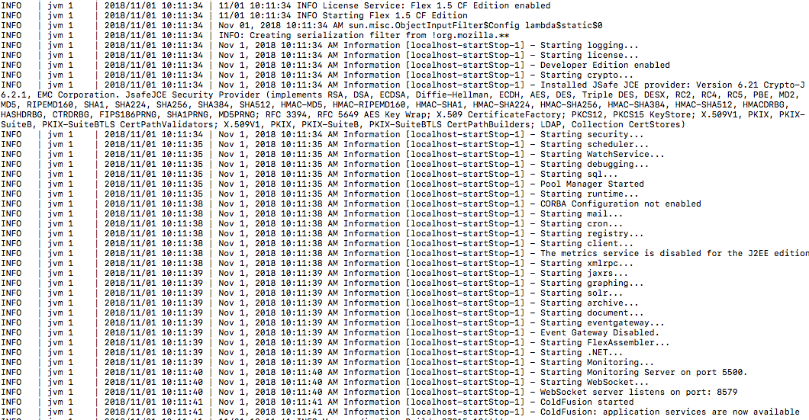

ColdFusion applications into J2EE containers
ColdFusion can be deployed to a Tomcat or JBoss kind of web servers
Overview
ColdFusion application server can be of two types, Enterprise and Standard. And it can be deployed in three forms.
As a J2EE instance or as a Standalone. In this article we are looking at the steps for deploying it as a J2EE instance AKA like a Java application.
Steps
-
Download Apache Tomcat server.
-
Download ColdFusion Application server from Adobe.com. You can get a developer licensed version but
might need an account (free) to download.
-
Start the CF installer and go ahead with steps until it asks you about the configuration. At that point you should select
J2EE and then the WAR configuration.
-
The output will be four folders.
-
CFIDE
-
cf_scripts
-
WEB-INF
-
META-INF (I almost always ignore this one though)
-
Unzip and setup Tomcat. Usually unzipping and running start script from bin folder should bring it up. So make sure it is reachable
via the browser window.
-
Stop Tomcat.
-
Open server.xml file from config folder and add this line inside host tag.
<Context docBase="path/to/docroot" path="contextpath" debug="0" reloadable="true" allowLinking="true">/ </Context>
-
Copy all the CF folders mentioned in above steps (CFIDE, cf_scripts, WEB-INF) into the root of your project folder
projectFolder
CFIDE
cf_scripts
WEB-INF
..other folders
-
Start Tomcat and tail the catalina logs to see your ColdFusion starting up.

-
Now you should be able to reach you app via
<protocol>://<domain>:<port>/<contextpath>
-
ColdFusion Administrator will be at
<protocol>://<domain>:<port>/<contextpath>/CFIDE/administrator/index.cfm